Seven years ago, my husband, Tom, and I were living in Merrill, Wis., with our children, Alyssa and Casey, when we decided to buy a piece of forested land. At that time, we were just looking for a place nearby where we could build a cabin and spend weekends, but we ended up with a year-round home. We now live on 10 beautiful acres in a log cabin that we built ourselves. We also keep animals, including donkeys and chickens. We love living a quiet life nestled in these huge timbers; the time for reflection suits us perfectly.
We found this place during a long search for just the right property. To decide if you want to buy a piece of land, you really have to walk across it, because you never know if the perfect building spot will be just over the next hill or on the other side of a swamp. The type of land we were looking for had to have enough trees to construct a log cabin.
Soon after we finally found and purchased our dream property, we started building the cabin. It took us two years to complete it-working mainly on weekends-and the finished result is about 600 square feet.
Tom had enough building experience to know exactly what needed to be done to build the cabin. Together, Tom, his brothers and some of our new neighbors selected and cut down about 60 aspen trees. Aspen wood starts out fairly soft, but after it is cut, it dries until it becomes brick hard. We peeled off the bark using old truck springs-the stripped trees smelled wonderful! After the wood had dried for a year, a friend brought over his portable sawmill and sawed the slabs off the logs on three sides. We later used some of the slabs to frame the windows inside the cabin.
Tom stacked the cut logs on the perimeter of the foundation-with a strip of foam insulation between each one-and drilled a spike down into the other logs to hold them together. We were able to save money by collecting used windows and doors for the cabin. Our roof is metal, which is wonderful when it rains-we can sit and listen to the patter of the raindrops.
MOVING IN
Our decision to live in the cabin year-round came about three years ago, when Tom had lost his job and we needed to quickly consider our future plans. Moving into the cabin seemed like the natural next step, and we feel very fortunate that everything worked out the way it did. Tom now works about 45 minutes away, and our son, Casey, goes to high school in nearby Phillips, Wis. Our daughter, Alyssa, is in college now and lives in Milwaukee.
Our house in town sold quickly, and we rushed to get electricity installed before we moved into the cabin. I was excited about the move and so eager to start raising poultry and livestock that I wanted us to build a barn even before we installed plumbing.
Tom grew up on a farm, but I was born and raised in Milwaukee and have had to learn all about our new lifestyle. When we first got our chickens, our city dogs had no idea what to think. Our little Boston terrier, Glory, would jump in the chicks’ box and sleep with them! I think she wanted to be their mom. I was excited about the chickens, too. Even now, when I open the chicken coop and see an egg I feel like a child on Christmas morning. Our rooster is a Barred Rock, with stunning black and white speckles. His name is Ezekiel, and he is an excellent alarm clock.
OUR TWO DONKEYS
Shortly after we moved here we acquired a young jenny (female donkey) named Daisy May, who was one of 60 donkeys rescued from a neglectful owner. Before we got her, Daisy’s hooves were curled up from a lack of trimming. I went to the Phillips public library and picked up several books about these animals. Donkeys make fierce “watchdogs,” and many people keep them with a herd of sheep to scare away coyotes and other predators. To take advantage of this trait, my husband built the chicken coop right next to Daisy’s barn, and she helps to protect our secluded yard from rats, mice and other pests. We have found numerous dead mice in her stall and even a dead weasel that she had stomped.
A few months after we got Daisy, a neighbor told us we needed a companion for her, so he gave us one of his donkeys-a 12-year-old gelding (castrated male) named Bernard. He moves very slowly, but Bernard is the calmest, most loving animal I have ever seen. His back is so wide that when my three nieces ride him they might as well be sitting on a sofa, and he is so tame that I sometimes catch one of our cats sitting on his back!
It didn’t take long to get Bernard into a harness; he is so willing to please. Now Bernard takes my nieces for buggy rides up and down the gravel road. When my mom visits, she brings Bernard bread and cookies, with the excuse that it will help maintain his strength.
AN UNEXPECTED EVENT
Donkeys have a long gestation period-12 months-so it wasn’t until about three months after we got Daisy that we noticed her belly was expanding. My husband didn’t think Daisy could be pregnant; he assumed she was eating too much hay. Then one day I was brushing her and actually saw movement on her side. I put my hand on her belly and felt the baby give a hard kick! When my sister came to visit, she felt a kick, too. We may have grown up in Milwaukee, but we were convinced Daisy was pregnant, even if my husband and all his brothers who grew up on the farm said otherwise.
One cold November morning, I was feeding Daisy and Bernard in the back field. I knew something was wrong when Daisy walked away to the corner of the field, because it was so unlike her to leave Bernard alone with half a bale of hay. I ran into the house and called my sister, who had mentioned she would take off work to witness the blessed event if Daisy really was pregnant.
As I was on the phone, I looked outside and saw Daisy lay down. After grabbing a pair of Casey’s binoculars, I snuck outside to watch from behind the woodpile. Daisy lay on the ground straining and pushing. Then she stood up and started walking around in circles, looking scared. She had two white hooves hanging out of her, and I realized that if I didn’t help her, we might lose Daisy and the foal, too. Once I got Daisy to lie down, I grabbed those two hooves and pulled hard. I thought I was strong, but I could not pull that baby out.
Finally, it occurred to me to only pull during a contraction. When I did that, a little white nose appeared, but the foal’s hooves were hanging limp, and I thought he was a stillborn. I was devastated, until the foal made a quiet gurgling sound, proving that he was alive. I gently slid one of my arms under his neck and my other arm under his belly to help guide him out. This baby donkey had fur like lamb’s wool. I laid him on the ground, and Daisy turned around and started to lick him. I had just witnessed a baby taking his first breath. Because of his strength and long hair, I named him Samson.
MAKING OURSELVES AT HOME
We have many blessings in our lives. My garden last summer was another miracle. This was my very first garden, and I harvested peas, beans, tomatoes and corn. My mom warned me that I would have problems with the soil, which is heavy clay, but when the garden took off, she showed up with her camera and took pictures. For my next garden, I will amend the soil with manure. With the donkeys and horses around, I will have to work hard to keep the animals out of the garden. Last summer, I lost several stalks of corn that were too close to the fence.
I also love horses and now own a Tennessee walking horse to ride on the trails by our home. I named her “God’s Sweet Southern Comfort.”
This lifestyle brings us true delight. What could be better than relaxing by a woodstove with a dog snoring on chilly evenings, or sitting outside and watching the donkeys play with their football.
|
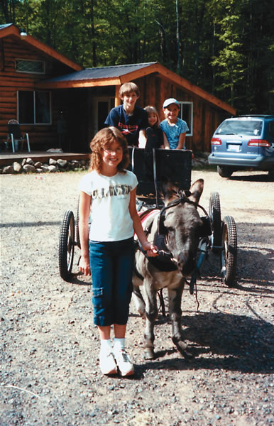 Ronnie’s son, Casey, and her nieces enjoy taking rides in the donkey-drawn cart. |
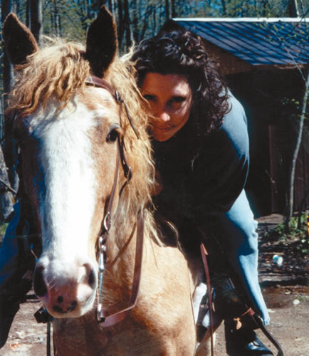 Ronnie Stevenson on horseback. |
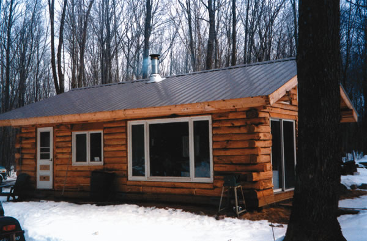 The completed log cabin. |
|
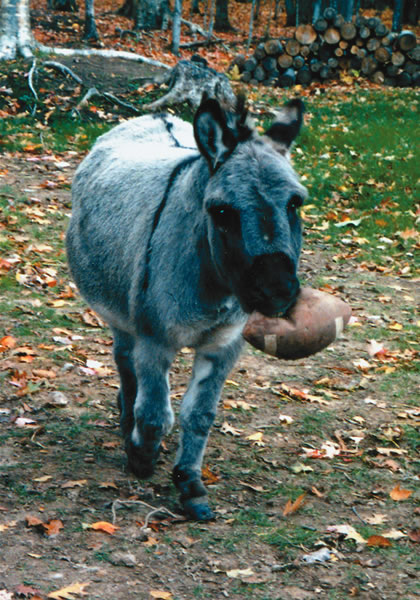 Bernard loves to play football. |
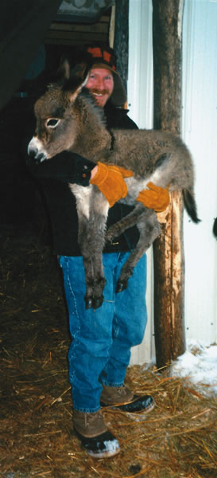 Tom Stevenson holds a newborn donkey. |
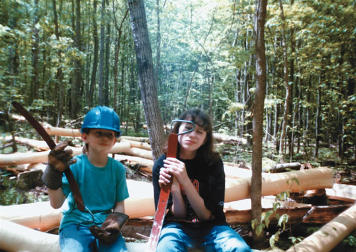 Casey and Alyssa Stevenson hold old truck springs used to peel logs for the cabin. |
|
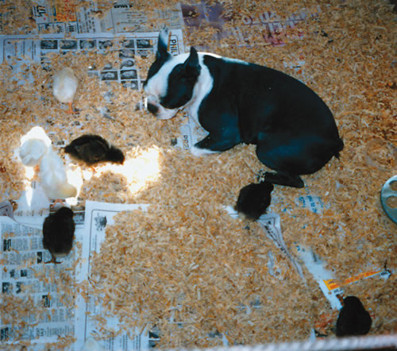 Glory the dog watches over the chicks. |
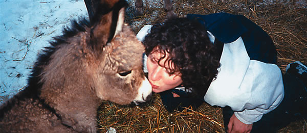 Ronnie Stevenson, who delivered Samson, gives him a kiss on the nose. |
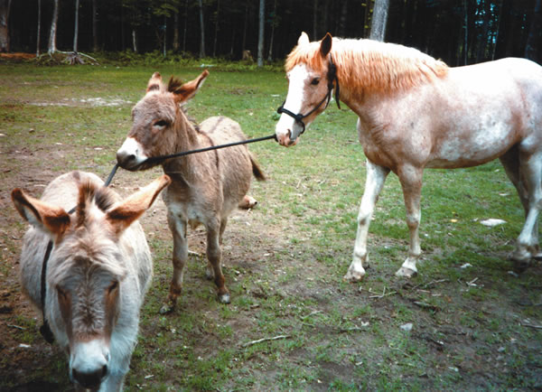 Barnyard high jinks. |
|
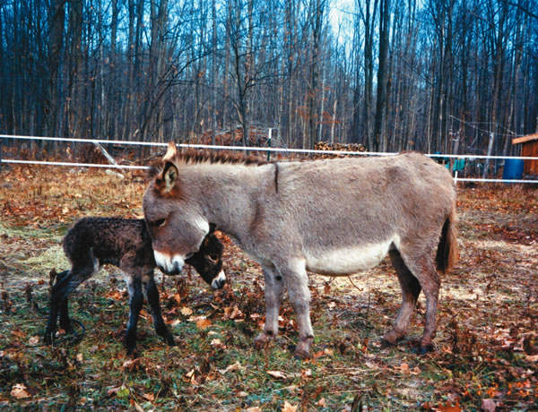 Daisy May with her foal, Samson. |
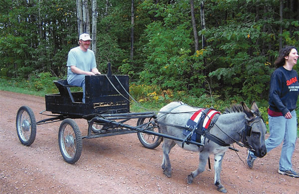 Bernard pulls the cart. |
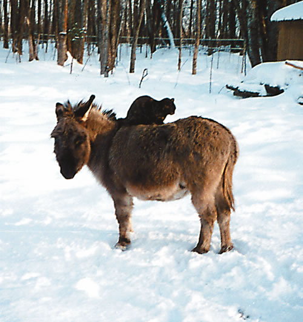 One of the cats sits on Bernard to get out of the snow |